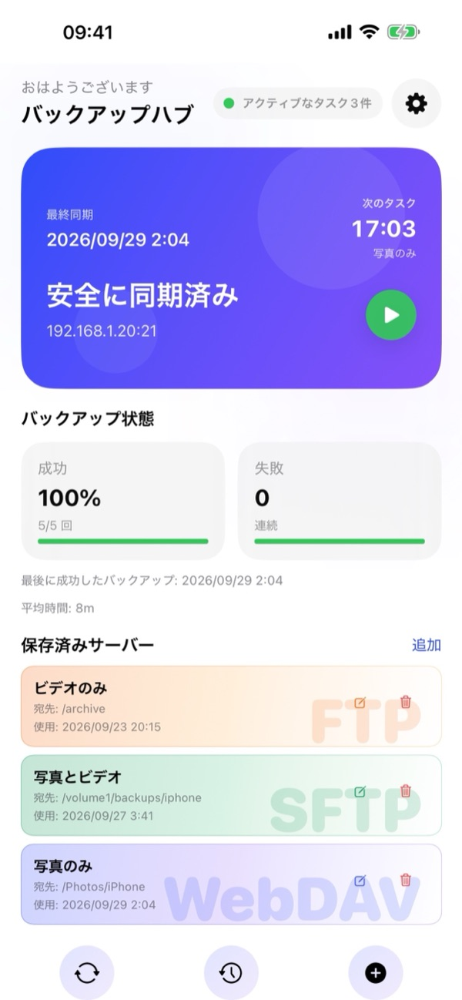
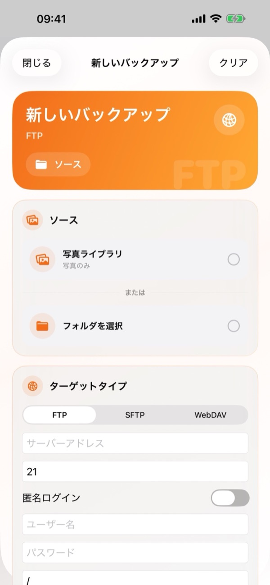
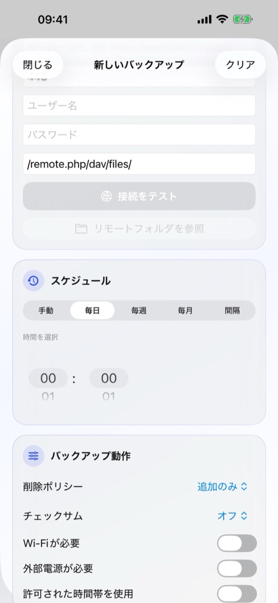
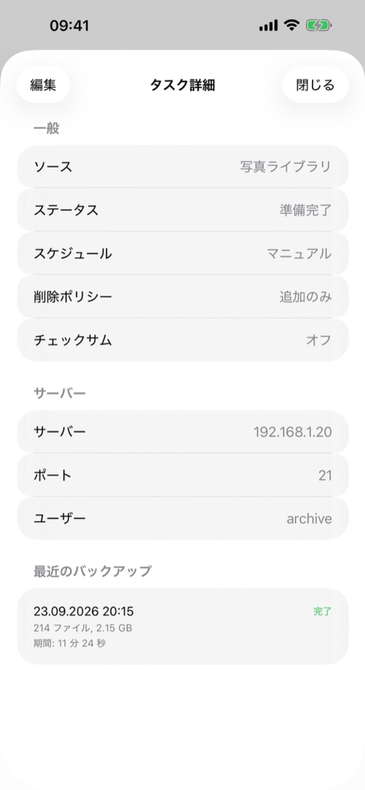
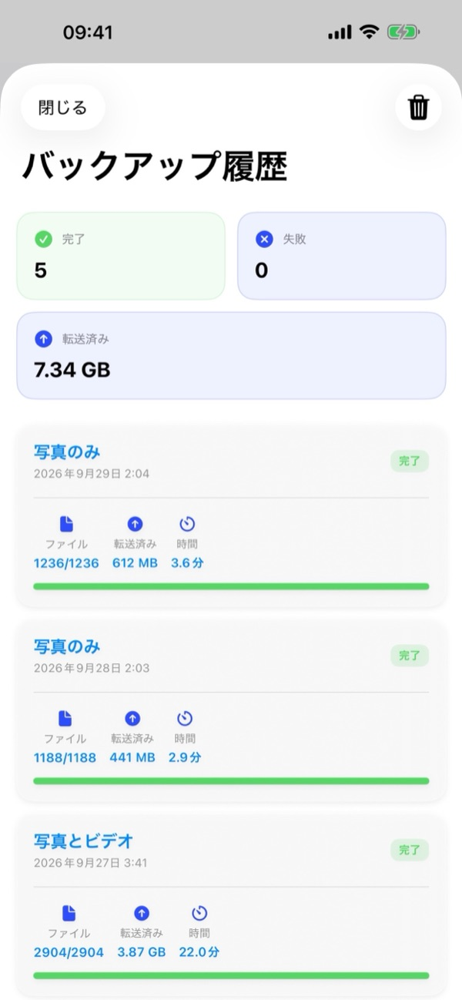
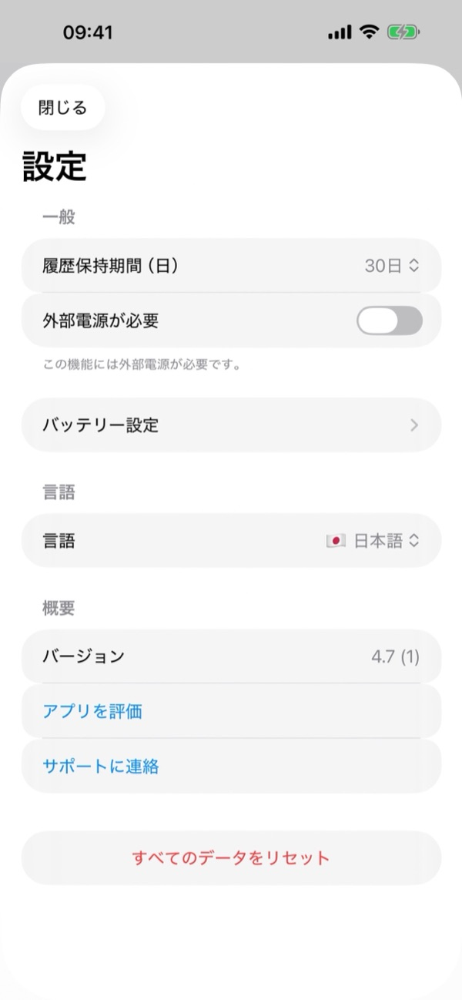

1. 必要なもの
- 対応サーバー：FTP、SFTP（SSH）、またはWebDAV（HTTP/HTTPS）に対応したNAS（Synology、QNAP、TrueNAS、Unraidなど）、自宅サーバー、または個人クラウド（Nextcloud、ownCloud、WebDAVストレージ）。
- 接続情報：サーバーアドレス、ポート番号（標準：FTP 21、SFTP 22、WebDAV 443/80）、ユーザー名とパスワード（FTPは匿名ログインも可）。
- iOSの権限：写真へのフルアクセス、自宅ネットワーク内サーバー用のローカルネットワーク権限、および通知。
2. バックアップハブの概要
アプリを開くと、バックアップハブにバックアップシステムの状態がリアルタイムで表示されます：
- ステータスカード：前回の同期日時、次のタスクの時刻と名前、保護ステータス、サーバーアドレス、そして今すぐバックアップを開始できる緑色の再生（▶）ボタンが表示されます。
- バックアップの健全性：成功率（％と実行回数）、連続失敗回数、前回の成功日時、平均所要時間を表示します。
- 保存済みサーバー：設定済みのFTP、SFTP、WebDAVタスクがカード表示され、編集（✏️）や削除（🗑️）がすぐに行えます。カードをタップするとタスクの詳細が開きます。
- 下部バーと設定：画面下部の3つのボタンから同期・実行（🔄）、バックアップ履歴（🕒）、新しいバックアップ（+）にアクセスできます。右上の歯車アイコン（⚙️）で設定を開きます。

3. 新しいバックアップを作成する
バックアップハブ下部の+ボタン（または保存済みサーバー横の追加）をタップして新しいバックアップ画面を開きます：
- ソース：写真ライブラリ（写真のみ、ビデオのみ、または両方）を選ぶか、フォルダを選択をタップしてiOSの「ファイル」アプリからフォルダを選びます。
- ターゲットタイプ：FTP、SFTP、WebDAVから選択し、サーバーアドレス、ポート、ユーザー名、パスワード、リモートパス（例：
/remote.php/dav/files/）を入力します。接続をテストで確認し、必要に応じてリモートフォルダを参照から保存先フォルダを選択します。 - スケジュール：手動、毎日、毎週、毎月、間隔から選び、時間を選択で実行時刻を設定します。
- バックアップ動作：削除ポリシー、チェックサム、実行条件を設定してタスクを保存します。
初回のフルバックアップ完了後は、新しく追加・変更されたファイルのみが転送されるため、2回目以降は大幅に高速化されます。


4. タスクの詳細と管理
保存済みサーバーのカードをタップするとタスクの詳細が開きます：
- 一般：ソース、現在のステータス（準備完了など）、スケジュール、削除ポリシー、チェックサム設定を確認できます。
- サーバー：サーバーアドレス、ポート、ユーザー名を確認できます。
- 最近のバックアップ：このタスクの直近の実行履歴（日時、ステータス、ファイル数、サイズ、所要時間）を確認できます。
- 左上の編集をタップすると設定を変更できます。

5. スケジュールと実行条件
スケジュールでは手動、毎日、毎週、毎月、間隔を選択でき、時間を選択で時刻を指定できます。
バックアップ動作では自動バックアップの実行条件を制限できます：
- Wi-Fiが必要：モバイルデータ通信を一切使用しません。
- 外部電源が必要：iPhoneの充電中のみ実行します。
- 許可された時間帯を使用：夜間など指定した時間帯にのみ自動バックアップを実行します。
- 最小バッテリー残量（設定 › バッテリー設定）：バッテリー残量がしきい値未満のときはスキップします。
6. 削除ポリシー・チェックサム・iCloud
バックアップ動作では、iPhoneで削除したファイルのサーバー側での扱いと整合性チェックを設定できます：
- 削除ポリシー › 追加のみ
- サーバー上のファイルは一切削除されません。バックアップ後にiPhoneの写真・ビデオを消して空き容量を増やしたい場合はこのモードを推奨します。
- 削除ポリシー › ミラー
- サーバーのフォルダをiPhoneのソースと完全に同じ状態に保ちます。iPhoneで削除したファイルは次回同期時にサーバーからも削除されます。
- 削除ポリシー › アーカイブ削除
- iPhoneで削除されたファイルは完全には消去されず、サーバー上の日付付き.backupflow_archiveフォルダに移動されます。
- チェックサム (Checksum)
- アップロード後に各ファイルが破損なくサーバーに届いたか検証します（最高速度のため初期設定はオフ）。
iCloud写真のヒント：「iPhoneのストレージを最適化」をお使いの場合は、必要に応じてiCloud項目をダウンロードをオンにすることで、iCloud上にのみあるオリジナル写真・ビデオもバックアップできます。
7. バックグラウンドでのバックアップ
BackupFlowはiOSのBGTaskSchedulerと連携してスケジュールされたバックアップを実行します。iOSがバッテリー残量や使用状況に応じて実行タイミングを調整するため、指定時刻より少し後に開始されたり通知が届いたりすることがあります。
iOSによって途中で一時停止された場合でも、アプリを開けば続きから再開され、転送済みのファイルはスキップされます。初回の大量バックアップ時はiPhoneをWi-Fiと充電器に接続したままにしてください。
8. バックアップ履歴
バックアップハブ下部バー中央の履歴（🕒）ボタンをタップしてバックアップ履歴を開きます：
- サマリーカード：完了数、失敗数、累計転送データ量（GB/MB）を上部に表示します。
- 詳細ログ：各カードにタスク名、日時、完了バッジ、ファイル数（例：
1236/1236）、転送サイズ、所要時間が表示されます。右上のゴミ箱アイコン（🗑️）で履歴を消去できます。

9. アプリ設定
バックアップハブ右上の歯車アイコン（⚙️）から設定を開きます：
- 履歴保持期間（日）：履歴を保存する日数（例：30日間）を選択します。
- 外部電源が必要とバッテリー設定：電源およびバッテリー残量の全体ルールを設定します。
- 言語：対応する12言語からアプリの表示言語をいつでも切り替えられます。
- 情報：アプリのバージョン確認、アプリを評価、サポートに連絡が行えます。
- すべてのデータをリセット：このiPhoneからすべてのタスク、履歴、保存済みパスワードを削除します（サーバー上のファイルは削除されません）。

10. 困ったときは
- サーバーに接続できない
- アドレス、ポート（FTP 21、SFTP 22、WebDAV 443/80）、ユーザー名、パスワードを確認してください。自宅サーバーの場合は同じWi-Fiに接続し、iPhoneの設定 › プライバシーとセキュリティ › ローカルネットワーク › BackupFlowがオンになっているか確認してください。
- 予定したバックアップが実行されない
- バックアップ動作の条件（Wi-Fi、外部電源、時間帯、バッテリー）と通知の許可を確認してください。
- 一部の写真が含まれない
- 写真への「フルアクセス」を許可し、必要に応じてiCloud項目をダウンロードをオンにしてください。
- サーバーからファイルが消えた
- タスクの削除ポリシーをミラーから追加のみまたはアーカイブ削除に変更してください。
- SFTPのセキュリティ警告が表示される
- サーバーのSSHフィンガープリントが変更されました。サーバーの再インストールや交換時は正常ですが、それ以外は管理者に確認してください。
11. プライバシーとセキュリティ
ファイルはiPhoneからご自身のサーバーへ直接転送されます。BackupFlowは独自のサーバーを持たず、ファイルを見ることも分析・追跡データを収集することもありません。パスワードはiOSキーチェーン（Keychain）に暗号化して保存されます。詳細はプライバシーポリシーをご覧ください。
12. お問い合わせ
アプリ内の設定 › サポートに連絡（または tamersavasci@icloud.com）からメールをお送りください。アプリのバージョンとデバイスモデルが自動的に添付されます。